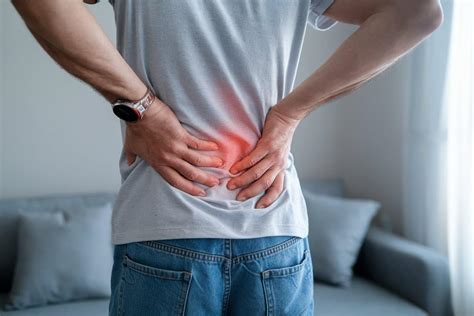

La lombalgie (ou douleur du bas du dos) touche plus de 80 % de la population au cours de sa vie. Qu'il s'agisse d'un lumbago aigu apparu brutalement ou de douleurs lombaires persistantes, la kinésithérapie active permet de lever les blocages et d'adapter progressivement le mouvement.

Lumbago aigu : repos ou mouvement ?
Face à une crise aiguë de lombalgie, le premier réflexe est souvent de s'aliter. Or, les études cliniques randomisées et les recommandations de la HAS (2019) démontrent que l'alitement strict prolonge la durée des symptômes et retarde la guérison. Le mouvement toléré constitue le meilleur traitement antalgique.
Pour en savoir plus sur la conduite à tenir en phase aiguë, vous pouvez consulter notre article dédié : Lombalgie aiguë : faut-il vraiment rester au lit ?.
L'évaluation mécanique (Méthode McKenzie / MDT)
Au cabinet à Epagny Metz-Tessy, l'évaluation s'attache à comprendre le comportement de votre douleur lors de mouvements répétés. Dans environ deux tiers des cas de lombalgie, il existe une préférence directionnelle : une direction de mouvement spécifique (extension, flexion ou glissement latéral) qui permet de réduire la douleur et de restaurer la mobilité (Long et al., 2004).
L'anecdote de Mr. Smith (1956)
C'est en observant un patient lombalgique immobilisé par mégarde dans une posture d'extension extrême sur sa table d'examen que le kinésithérapeute Robin McKenzie a découvert que la lordose lombaire pouvait, contre toute idée reçue, supprimer une douleur irradiante et la recentrer dans le bas du dos.
Pour en apprendre davantage sur cette approche, découvrez notre article : Qu'est-ce que la préférence directionnelle en méthode McKenzie ?.
Et si la préférence directionnelle n'est pas évidente ?
L'évaluation mécanique n'est pas un filtre magique. Il arrive fréquemment qu'aucune préférence directionnelle claire ne se dégage immédiatement lors du premier bilan. Cela demande alors de la patience, une observation des symptômes sur quelques jours, et un travail axé sur la réexposition progressive aux mouvements quotidiens, le renforcement et le conditionnement général.
Si la douleur ne répond pas aux sollicitations mécaniques ou présente des caractères atypiques, une réorientation médicale vers votre médecin généraliste est organisée.
Questions fréquentes
Mon dos s'est bloqué d'un coup, est-ce une vertèbre déplacée ?
Non. Les vertèbres ne se déplacent pas. La sensation de blocage est une contracture musculaire réflexe protectrice déclenchée par le système nerveux face à une menace perçue ou un stress mécanique.
Combien de temps dure une lombalgie aiguë ?
La très grande majorité des lumbagos aigus s'améliore nettement en 2 à 4 semaines, particulièrement si vous maintenez une activité quotidienne minimale dans les limites de la douleur.
Références scientifiques & Littérature
- Dahm KT, Brurberg KG, Jamtvedt G, Hagen KB. Advice to rest in bed versus advice to stay active for acute low-back pain and sciatica. Cochrane Database of Systematic Reviews, 2010.
- Long A, Donelson R, Fung T. Does it matter which exercise? A randomized trial of exercise for low back pain. Spine, 2004; 29(23):2593-2602.
- Haute Autorité de Santé (HAS). Prise en charge du patient présentant une lombalgie commune. Recommandations de bonne pratique, 2019.